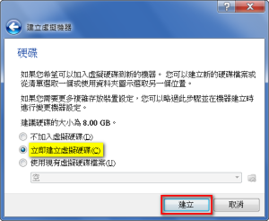

1-2 透過虛擬軟體體驗
● 方法：
○ Virtual Box
● 優點：
○ 跨平台，不受系統限制。
○ 跨載具，可在手機及平板電腦上體驗。
○ 無需安裝任何軟體、不影響原有電腦系統及資料。
● 缺點：
○ 網路頻寬會影響體驗品質
○ 無法儲存相關設定或檔案
○ 無法播放多媒體聲音
○ 需要登入才能在體驗平台中上網
● 建議：
○ 若是您採用此方法發現有操作不流暢的情形，表示您的電腦不適合用此方法體驗 ezgo，建議您
可以考慮並請有 ezgo 或其他 Linux 安裝經驗的朋友協助您將 ezgo 安裝到您的電腦。
● 設定 Virtual Box 虛擬機：
| 步驟 1：開啟Virtual Box，選按『新增』。 | 步驟 2：依序輸入『名稱』、『類型』及『版 本』的資訊，再點選『下一步』。 |
 |
|
| 步驟 3：設定記憶體大小，如：2048MB(2G)， 再點選『下一步』。 |
步驟 4：建立虛擬硬碟來放置及存取資料，並 選按『建立』。 |
|  | |
| 步驟 5：設定檔案類型，再點選『下一步』。 | 步驟 6：設定存放硬碟，再點選『下一步』。 |
| 步驟 7：設定檔案的資料夾，如：ezgo。 再設定虛擬硬碟大小，如：15G。 選按『建立』 |
步驟 8：完成畫面 |
※註：記憶體大小及硬碟大小的設定，需視實際機器大小調整，若超過實際空間，則會顯示
錯誤訊息。
如：記憶體只有 2G，因 Windows 平台在 Run 程式時，亦需要使用到記憶體，故設定
為 2G 的大小，就會出現錯誤訊息。
又或者硬碟容量僅餘 5G，卻設定存放空間為 15G，超過實際硬碟空間大小，亦會出現
錯誤訊息。
● 設定 Virtual Box 檔案來源：
● 開啟Vritual Box 虛擬機：
| 步驟 1：在『工作階段』的視窗中選擇欲開啟 的虛擬機，再點選『啟動』按鈕。 |
步驟 2：首次執行虛擬機時，系統會顯示資訊 視窗，選按『確定』跳過。 |
| 步驟 3：虛擬機器啟動後，即可看到如下畫面， 接著在『啟動ezgo 13』選項按 Enter 進入下一步驟。 |
步驟 4：靜候 1-3 分鐘即可進入 ezgo 系統。 |
 |
● 關閉 Vritual Box 虛擬機：
| 步驟 1：選按『VirtualBox』視窗右上方的 『X』關閉按鈕。 |
步驟 2：系統會顯示關閉虛擬機器後處理方式 的選項，如：儲存機器狀態，再點選 『確定』。 |
|
|
| 步驟 3：儲存畫面 | |

{kind=link}
{kind=link}
{kind=link}
{kind=link}
{kind=link}
{kind=link}
{kind=link}
{kind=link}
{kind=link}
{kind=link}
{kind=link}
{kind=link}
{kind=link}
{kind=link}
{kind=link}
{kind=link}
{kind=link}
{kind=link}